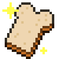
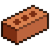
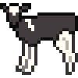
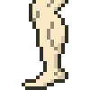
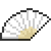
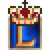
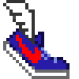

In 2015, Tony had a goal of building up a running habit. We got close playing video games together, so, as a sort of silly birthday gift, I made an 8-bit-style progress tracker that was hooked up to his FitBit account.
Concept and planning was a collaboration with our friend Lawrence Wu. Tae Park contributed a couple cute icons. I did the design and development.
See the UI!
Concept and planning was a collaboration with our friend Lawrence Wu. Tae Park contributed a couple cute icons. I did the design and development.
See the UI!
Illustrated icons for achievements and a Tony sprite with running animation.
Nice calves!
Nice calves!







They say that a habit takes six weeks to form, so we thought it would be helpful to keep track of weekly streaks. To do this, I wrote a server-side program that queried the FitBit API daily and saved his progress. The whole app was powered by a reactive Javascript framework called Meteor.
Big shout out to Tony Sheng, who patiently played League with scrubs like me.